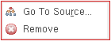
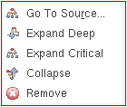

Controls Available on the Profiler Summary Report
After the profiler displays the summary report, you can right-click the summary results and choose one of the following options:
-
In the Table View:
- Go To Source: To view the definition of the selected function in the source code pane.
- Remove: To remove the selected function from the results pane.
The Go To Source option is disabled for binary functions and function objects. -
In the Tree View:
- Go To Source: To view the definition of the selected function in the source code pane.
- Expand Deep: To display all functions called by the selected function recursively until the entire calling tree is expanded.
- Expand Critical: To expand and highlight the function call sequence that consumes the maximum memory or takes the maximum execution time for the selected function.
- Collapse: To collapse the function tree.
- Remove: To remove the selected function from the calling tree.
You can view the definition of a function in the source code pane, only if, the function is not a binary or a read/write protected function. The Go To Source option is disabled for function objects as well.
Related Topics
Return to top